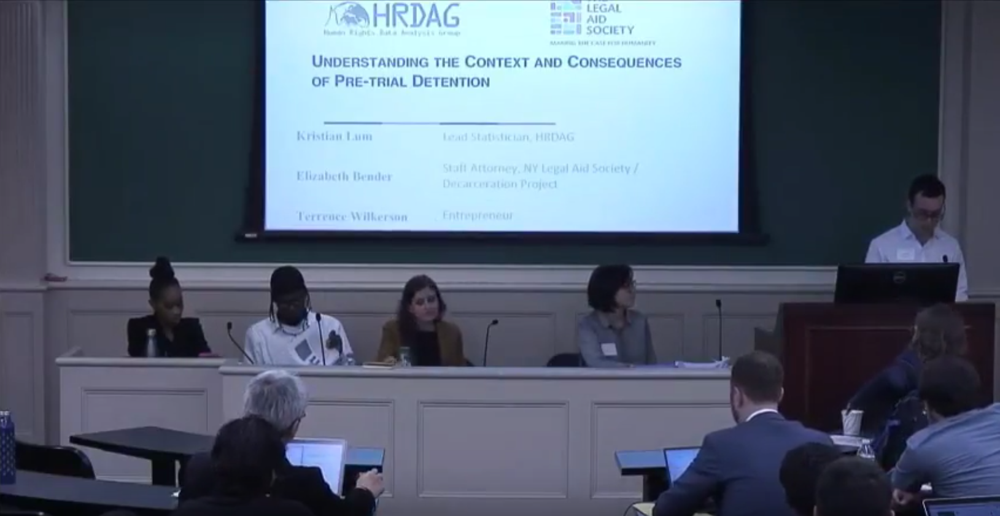

The Harvard Business Review recently published an article, Want Less-Biased Decisions? Use Algorithms. by Alex P. Miller. The article focuses on the fact that humans make very biased decisions (which is true), yet ignores many important related issues, including:
- algorithms are often implemented without any appeals method in place (due to the misconception that algorithms are objective, accurate, and won’t make mistakes)
- algorithms are often used at a much larger scale than human decision makers, in many cases, replicating an identical bias at scale (part of the appeal of algorithms is how cheap they are to use)
- users of algorithms may not understand probabilities or confidence intervals (even if these are provided), and may not feel comfortable overriding the algorithm in practice (even if this is technically an option)
- instead of just focusing on the least-terrible existing option, it is more valuable to ask how we can create better, less biased decision-making tools by leveraging the strengths of humans and machines working together

Miller acknowledges that critics of the “algorithmic revolution” are “concerned that algorithms are often opaque, biased, and unaccountable tools being wielded in the interests of institutional power”, although he then focuses exclusively on the biased part for the remainder of the article, without addressing the opaque or unaccountable charges (as well as how these interact with bias).
Humans vs. machines is not a helpful framing
The media often frames advances in AI through a lens of humans vs. machines: who is the champion at X task. This framework is both inaccurate as to how most algorithms are used, as well as a very limited way to think about AI. In all cases, algorithms have a human component, in terms of who gathers the data (and what biases they have), which design decisions are made, how they are implemented, how results are used to make decisions, the understanding various stakeholders have of correct uses and limitations of the algorithm, and so on.
Most people working on medical applications of AI are not trying to replace doctors; they are trying to create tools that will allow doctors to be more accurate and more efficient, improving quality of care. The best chess “players” are neither humans nor computers, but rather, teams of humans and computers working together.
Miller’s HBR article points out (correctly) that humans are very biased, and then compares our current not-so-great approaches to see which is less terrible. The article does not ask the question, how can we develop less biased ways to make decisions (perhaps using some combination of humans and algorithms)? which is a far more interesting and important question.
Algorithms are often used differently than human decision makers
Algorithms are often used at a larger scale, mass-producing identical biases, and assumed to be error-proof or objective. The studies that Miller shares compares them in an apples-to-apples way, which doesn’t acknowledge how differently they are often used in practice.
Cathy O’Neil writes in Weapons of Math Destruction that the algorithms she is critiquing tend to punish the poor. They specialize in bulk, and they’re cheap. That’s part of their appeal. The wealthy, by contrast, often benefit from personal input. A white-shoe law firm or an exclusive prep school will lean far more on recommendations and face-to-face interviews than will a fast-food chain or a cash-strapped urban school district. The privileged, we’ll see time and again, are processed more by people, the masses by machines. (emphasis mine)
One example from O’Neil’s book is that of a college student with bipolar disorder who wanted to get a summer job bagging groceries. Every store he applied to was using the same pyschometric evaluation software to screen candidates, and he was rejected from every store. This captures another danger of algorithms: even though humans often have similar biases, not all humans will make the exact same decisions (e.g. perhaps that college student would have been able to find one place to hire him, even if some of the people making decisions had biases about mental health).
Many people will put more trust in algorithmic decisions than they might in human decisions. While the researchers designing the algorithms may have a good grasp on probability and confidence intervals, often the general public using them will not. Even if people are given the power to override algorithmic decisions, it is crucial to understand if they will feel comfortable doing so in practice.
The need for meaningful appeals and explanations
Many of the most chilling stories of algorithmic bias don’t involve meaningful explanations or a meaningful appeals process. This seems to be a particular trend amongst algorithmic decision making systems, perhaps since people mistakenly assume algorithms are objective, they believe there is no need for appeals. Also, as explained above, algorithmic decision making systems are often used as a cost-cutting device, and allowing appeals would be more expensive.
Cathy O’Neil writes the account of a teacher who is beloved by her students, their parents, and the principal, yet is inexplicably fired by an algorithm. She is never able to get an answer as to why she was fired. Stories like this would be somewhat less disturbing if there had been a relatively quick and simple way for her to appeal the decision, or even to know for sure what factors it was related to.
The Verge investigated software used in over half of U.S. states to determine how much healthcare people receive. After its implemention in Arkansas, people (many with severe disabilities) drastically had their healthcare cut. For instance, Tammy Dobbs, a woman with cerebral palsy who needs an aid to help her to get out of bed, to go to the bathroom, to get food, and more, had her hours of help suddenly reduced by 20 hours a week. She couldn’t get any explanation for why her healthcare was cut. Eventually, a court case revealed that there were mistakes in the software implementation of the algorithm, negatively impacting people with diabetes or cerebral palsy. However, Dobbs and many other people reliant on these health care benefits live in fear that their benefits could again be cut suddenly and inexplicably.
The creator of the algorithm, who is a professor and earning royalties off of this software, was asked whether there should be a way to communicate decisions, “It’s probably something we should do. I should also probably dust under my bed.” He later clarified that he thought it was someone else’s responsibility. We can not keep claiming the problems caused by our technology are someone else’s responsibility.
For a separate computer system used in Colorado to determine public benefits in the mid-2000s, it was discovered that more than 900 incorrect rules had been coded into the system, resulting in problems like pregnant women being denied Medicaid. It is often hard for lawyers to even discover these flaws, since the inner-workings of the algorithms are typically protected as trade secrets. Systems used to make decisions related to healthcare, hiring/firing, criminal justice, and other life-altering areas should include some sort of human appeals process, that is relatively fast and easy to navigate. Many of the most chilling stories of algorithmic decision making would not be nearly as concerning if there had been an easy way to appeal and correct faulty decisions. Mistakes are possible in anything we do, so it’s important to have a tight loop in which we make it easy to discover and correct mistakes.
Complicated, real-world systems
When we think about AI, we need to think about complicated, real-world systems. The studies in the HBR article treat decision making as an isolated action, without taking into account that this decision-making happens within complicated real-world systems. A decision about whether someone is likely to commit another crime is not an isolated decision: it lives within the complicated system of our criminal justice system. We have a responsibility to understand the real-world systems with which our work will interact, and to not lose sight of the actual people who will be impacted.
The COMPAS recidivism algorithm is used in some US courtrooms for decisions related to pre-trial bail, sentencing, and parole. It was the subject of a ProPublica investigation finding that the false positive rate (people that were labeled “high risk” but were not re-arrested) for white defendants was 24% and for Black defendants was 45%. Later research found that COMPAS (which uses 137 inputs in a black-box algorithm) was no more accurate than a simple linear equation on two variables. COMPAS was also not more accurate than untrained Mechanical Turk workers. (You can find out more about various definitions of fairness in Princeton CS Professor Arvind Narayanan’s excellent 21 Definitions of Fairness talk).
Kristian Lum, statistics PhD and lead data scientist at the Human Rights Digital Analysis Group, organized a workshop together with Elizabeth Bender, a staff attorney for the NY Legal Aid Society and former public defender, and Terrence Wilkerson, an innocent man who had been arrested and could not afford bail. Together, they shared first hand experience about the obstacles and inefficiencies that occur in the legal system, providing valuable context to the debate around COMPAS. Bender shared that for public defenders meet with defendants at Rikers Island, where many pre-trial detainees in NYC who can’t afford bail are held, involves a bus ride that is two hours each way and they then only get 30 minutes to see the defendant, assuming the guards are on time (which is not always the case). Wilkerson explained how frequently innocent defendents who can’t afford bail accept guilty plea bargains just so they can get out of jail faster. Again, all this is for people that have not even faced a trial yet! This panel was an excellent way to illuminate the real-world systems and educate about the first-hand impact. I hope more statisticians and computer scientists will follow this example.

As this example shows, algorithms can often exacerbate underlying societal problems. There are deep, structural problems with the US courts and prison systems, including racial bias, the use of cash bail (nearly half a million people in the USA are languishing in jail before even facing a trial, because they are too poor to afford bail), predatory for-profit prisons, and extreme over-use of prisons (the US is home to 4% of the world’s population and 22% of the world’s prisoners). We have a responsibility to understand the systems and underlying problems our algorithms may interact with.
Most critics of unjust bias aren’t anti-algorithm
Most critics of biased algorithms are opposed to unjust bias; they are not people who hate algorithms. Miller says that critics of biased algorithms “rarely ask how well the systems they analyze would operate without algorithms,” suggesting that those speaking out against biased algorithms are perhaps unaware of how biased humans are or perhaps just don’t like algorithms. I spent a great deal of time researching and writing about studies of human bias (particularly as to how they pertain to the tech industry), long before I began writing about bias in machine learning.
When I tweet or share about biased or unethical algorithms, I frequently encounter push-back that I must be anti-algorithms or opposed to tech. This couldn’t be further from the truth: I have a PhD in math; I’ve worked as a quant, data scientist, and software engineer; I created a free, online Computational Linear Algebra course and co-founded fast.ai, which runs Practical Deep Learning for Coders and won Stanford’s Computer Vision Speed Test through clever use of algorithms.
I’m in no way unique in this: most of the outspoken critics of biased algorithms that come to mind have PhDs in computer science, math, or statistics, and continue to be active in their fields. Just check out some of the speakers from the Fairness Accountability and Transparency Conference (and watch their talks!). One such example is Arvind Narayanan, a computer science professor at Princeton, winner of the Kaggle Social Network Challenge, teacher of a popular cryptocurrency course, and also speaks out against algorithmic bias.
I hope that the popular discussion of biased algorithms can move beyond unnuanced rebuttals and more deeply engage with the issues involved.